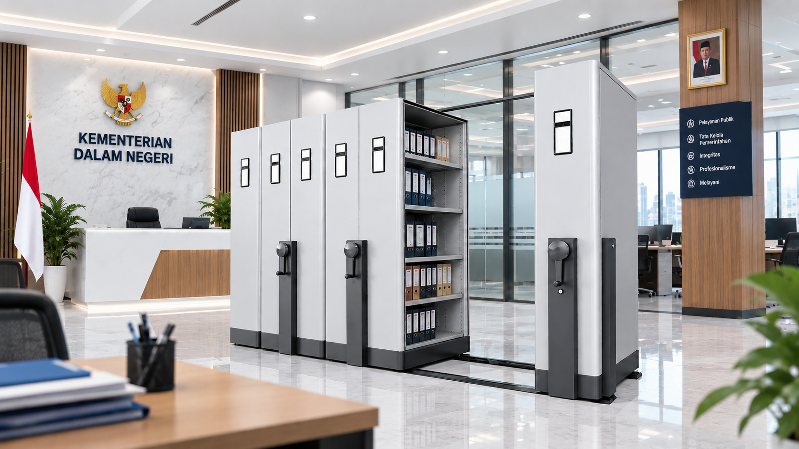
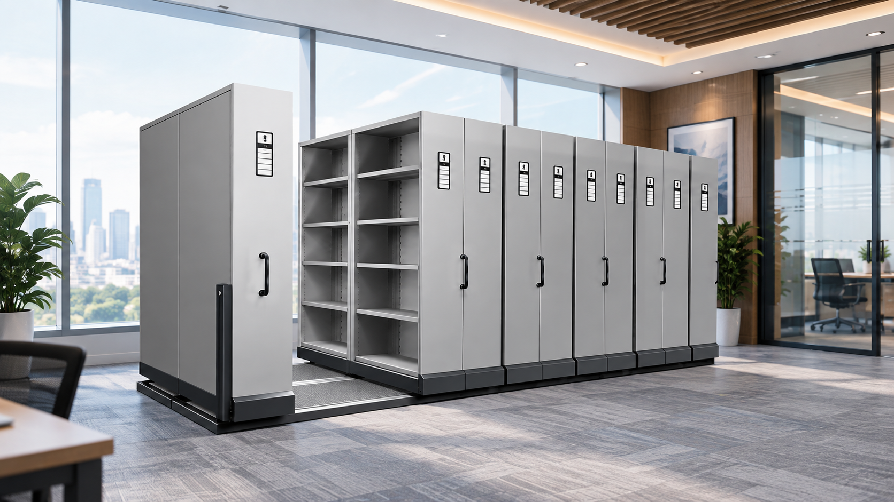
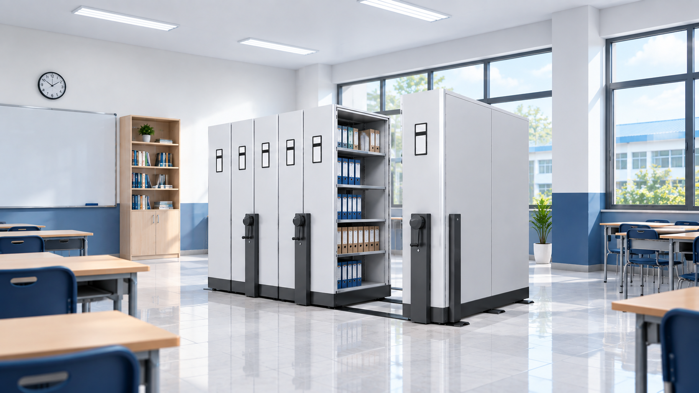
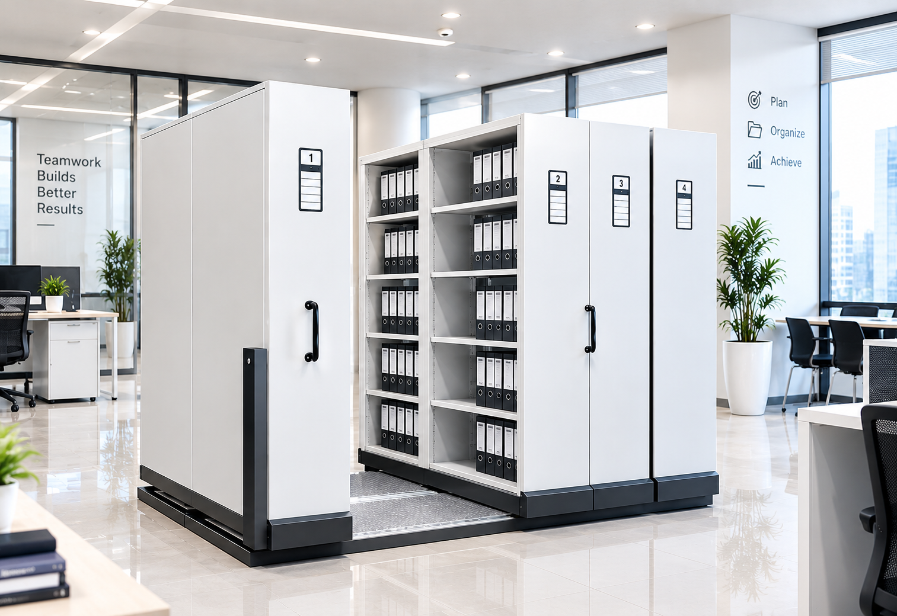

Manfaat Mobile File untuk Institusi Pemerintah
Mengapa mobile file menjadi solusi ideal untuk pengelolaan dokumen di lingkungan pemerintahan.
Baca ArtikelInsight & informasi terbaru dari kami
Temukan berbagai insight, tips, dan informasi terkini seputar mobile file serta solusi penyimpanan arsip yang efisien untuk kebutuhan kantor, pemerintahan, rumah sakit, sekolah, dan industri.
Mulai dengan mengelompokkan arsip berdasarkan kategori, tentukan sistem indeks yang konsisten, beri label pada rak, lakukan pemilihan berkala, dan manfaatkan ruang secara vertikal maupun horizontal.
Baca Artikel

Mengapa mobile file menjadi solusi ideal untuk pengelolaan dokumen di lingkungan pemerintahan.
Baca Artikel
Langkah sederhana untuk memastikan mobile file Anda tetap optimal dan tahan lama dipakai.
Baca Artikel
Manfaatkan mobile file secara vertikal untuk memaksimalkan penggunaan ruang kantor yang terbatas.
Baca ArtikelHubungi tim kami sekarang dan dapatkan konsultasi gratis terkait solusi penyimpanan arsip yang tepat untuk Anda.
Konsultasi Sekarang